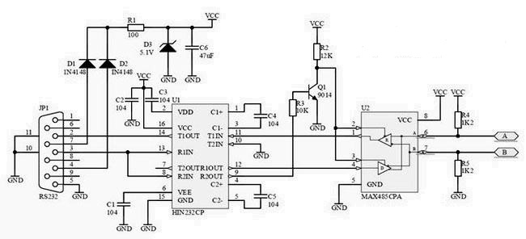

RS232简介：
RS-232-C是美国电子工业协会EIA（Electronic Industry Association）制定的一种串行物理接口标准。RS是英文“推荐标准”的缩写，232为标识号，C表示修改次数。RS-232-C总线标准设有25条信号线，包括一个主通道和一个辅助通道。
在多数情况下主要使用主通道，对于一般双工通信，仅需几条信号线就可实现，如一条发送线、一条接收线及一条地线。
RS-232-C标准规定的数据传输速率为50、75、100、150、300、600、1200、2400、4800、9600、19200、38400波特。
RS-232-C标准规定，驱动器允许有2500pF的电容负载，通信距离将受此电容限制，例如，采用150pF/m的通信电缆时，最大通信距离为15m；若每米电缆的电容量减小，通信距离可以增加。传输距离短的另一原因是RS-232属单端信号传送，存在共地噪声和不能抑制共模干扰等问题，因此一般用于20m以内的通信。具体通讯距离还与通信速率有关，例如，在9600pbs时，普通双绞屏蔽线时，距离可达30-35米。
串行通信接口标准经过使用和发展，目前已经有几种。但都是在RS-232标准的基础上经过改进而形成的。所以，以RS-232C为主来讨论。RS-232C标准是美国EIA（电子工业联合会）与BELL等公司一起开发的1969年公布的通信协议。它适合于数据传输速率在0～20000b/s范围内的通信。这个标准对串行通信接口的有关问题，如信号线功能、电气特性都作了明确规定。由于通信设备厂商都生产与RS-232C制式兼容的通信设备，因此，它作为一种标准，目前已在微机通信接口中广泛采用。
首先，RS-232-C标准最初是远程通信连接数据终端设备DTE(Data Terminal Equipment）与数据通信设备DCE（Data Communicate Equipment）而制定的。因此这个标准的制定，并未考虑计算机系统的应用要求。但目前它又广泛地被借来用于计算机（更准确的说，是计算机接口与终端或外设之间的近端连接标准)。显然，这个标准的有些规定和计算机系统是不一致的。有了对这种背景的了解，我们对RS-232C标准与计算机不兼容的地方就不难理解了。
其次，RS-232C标准中所提到的“发送”和“接收”，都是站在DTE立场上，而不是站在DCE的立场来定义的。由于在计算机系统中，往往是CPU和I/O设备之间传送信息，两者都是DTE，因此双方都能发送和接收。
电气特性
EIA-RS-232C对电气特性、逻辑电平和各种信号线功能都作了规定。
在TxD和RxD上：
$\color{red}{逻辑1(MARK)=-3V～-15V}$
$\color{green}{逻辑0(SPACE)=+3～+15V}$
在RTS、CTS、DSR、DTR和DCD等控制线上：
信号有效（接通，ON状态，正电压）=+3V～+15V
信号无效（断开，OFF状态，负电压）=-3V～-15V
以上规定说明了RS-232C标准对逻辑电平的定义。对于数据（信息码）：逻辑“1”（传号）的电平低于-3V，逻辑“0”（空号）的电平高于+3V；对于控制信号；接通状态（ON）即信号有效的电平高于+3V，断开状态（OFF）即信号无效的电平低于-3V，也就是当传输电平的绝对值大于3V时，电路可以有效地检查出来，介于-3～+3V之间的电压无意义，低于-15V或高于+15V的电压也认为无意义，因此，实际工作时，应保证电平在-3V～-15V或+3V～+15V之间。
接口
连接器：由于RS-232C并未定义连接器的物理特性，因此，出现了DB-25、DB-15和DB-9各种类型的连接器，其引脚的定义也各不相同。下面分别介绍两种连接器。
（1）DB-25：PC和XT机采用DB-25型连接器。DB-25连接器定义了25根信号线，分为4组：
①异步通信的9个电压信号（含信号地SG）2，3，4，5，6，7，8，20，22
②20mA电流环信号 9个（12，13，14，15，16，17，19,23，24）
③空6个（9，10，11，18，21，25）
④保护地（PE）1个，作为设备接地端（1脚）
注意，20mA电流环信号仅IBM PC和IBM PC/XT机提供，至AT机及以后，已不支持。
（2）DB-9：
在AT机及以后，不支持20mA电流环接口，使用DB-9连接器，作为提供多功能I/O卡或主板上COM1和COM2两个串行接口的连接器。它只提供异步通信的9个信号。DB-9型连接器的引脚分配与DB-25型引脚信号完全不同。因此，若与配接DB-25型连接器的DCE设备连接，必须使用专门的电缆线。
电缆长度：在通信速率低于20kb/s时，RS-232C 所直接连接的最大物理距离为15m（50英尺）。
最大直接传输距离说明：RS-232C标准规定，若不使用MODEM，在码元畸变小于4%的情况下，DTE和DCE之间最大传输距离为15m（50英尺）。可见这个最大的距离是在码元畸变小于4%的前提下给出的。为了保证码元畸变小于4%的要求，接口标准在电气特性中规定，驱动器的负载电容应小于2500pF。
接口信号
RS-232C 的功能特性定义了25芯标准连接器中的20根信号线，其中2条地线、4条数据线、11条控制线、3条定时信号线，剩下的5根线作备用或未定义。常用的只有10根，它们是：
（1）联络控制信号线：1
数据发送准备好（Data set ready-DSR）——有效时（ON）状态，表明MODEM处于可以使用的状态。
1 | 数据终端准备好（Data terminal ready-DTR）——有效时（ON）状态，表明数据终端可以使用。 |
这两个信号有时连到电源上，一上电就立即有效。这两个设备状态信号有效，只表示设备本身可用，并不说明通信链路可以开始进行通信了，能否开始进行通信要由下面的控制信号决定。1
请求发送（Request to send-RTS）——用来表示DTE请求DCE发送数据，即当终端准备要接收MODEM传来的数据时，使该信号有效（ON状态），请求MODEM发送数据。它用来控制MODEM是否要进入发送状态。
1 | 允许发送（Clear to send-CTS）——用来表示DCE准备好接收DTE发来的数据，是与请求发送信号RTS相应的信号。当MODEM准备好接收终端传来的数据，并向前发送时，使该信号有效，通知终端开始沿发送数据线TxD发送数据。 |
这对RTS/CTS请求应答联络信号是用于半双工MODEM系统中发送方式和接收方式之间的切换。在全双工系统中，因配置双向通道，故不需要RTS/CTS联络信号，使其变高。1
接收线信号检出（Received Line detection-RLSD）——用来表示DCE已接通通信链路，告知DTE准备接收数据。当本地的MODEM收到由通信链路另一端（远地）的MODEM送来的载波信号时，使RLSD信号有效，通知终端准备接收，并且由MODEM将接收下来的载波信号解调成数字量数据后，沿接收数据线RxD送到终端。此线也叫做数据载波检出（Data Carrier dectection-DCD）线。
1 | 振铃指示（Ringing-RI）——当MODEM收到交换台送来的振铃呼叫信号时，使该信号有效（ON状态），通知终端，已被呼叫。 |
（2）数据发送与接收线：1
发送数据（Transmitted data-TxD）——通过TxD终端将串行数据发送到MODEM，（DTE→DCE）。
1 | 接收数据（Received data-RxD）——通过RxD线终端接收从MODEM发来的串行数据，（DCE→DTE）。 |
（3）地线 ：
1 | GND、Sig.GND——保护地和信号地，无方向。 |
上述控制信号线何时有效，何时无效的顺序表示了接口信号的传送过程。例如，只有当DSR和DTR都处于有效（ON）状态时，才能在DTE和DCE之间进行传送操作。若DTE要发送数据，则预先将DTR线置成有效（ON）状态，等CTS线上收到有效（ON）状态的回答后，才能在TxD线上发送串行数据。这种顺序的规定对半双工的通信线路特别有用，因为半双工的通信才能确定DCE已由接收方向改为发送方向，这时线路才能开始发送。
接线
在工程当中经常会用到232口，一般是圆头8针与D型9针两种串口。在一定的条件下，必须要自己制作一个相应的”圆头或者是D型的”232串口。
RS232C串口通信接线方法（三线制）
首先，串口传输数据只要有接收数据针脚和发送针脚就能实现：同一个串口的接收脚和发送脚直接用线相连，两个串口相连或一个串口和多个串口相连
同一个串口
接收脚和发送脚直接用线相连对9针串口和25针串口，均是2与3直接相连；
两个不同串口（不论是同一台计算机的两个串口或分别是不同计算机的串口）
DB9-DB9
2-3,3-2,5-5
DB25-DB25
2-3,3-2,7-7
DB9-DB25
2-3,3-2,5-7
上面是对微机标准串行口而言的，还有许多非标准设备，如接收GPS数据或电子罗盘数据，只要记住一个原则：接收数据针脚（或线）与发送数据针脚（或线）相连，彼此交叉，信号地对应相接。
8针圆形串口接线：
2”逻辑地”，4”TXD”,7”RXD”。
9针D型串口：
2”RXD”，3”TXD”，5”逻辑地”。
| 针脚 | 信号 | 定义 | 作用 |
|---|---|---|---|
| 1 | DCD | 载波检测 | eceived Line Signal Detector(Data Carrier Detect) |
| 2 | RXD | 接收数据 | Received Data |
| 3 | TXD | 发送数据 | Transmit Data |
| 4 | DTR | 数据终端准备好 | Data Terminal Ready |
| 5 | SGND | 信号地 | Signal Ground |
| 6 | DSR | 数据准备好 | Data Set Ready |
| 7 | RTS | 请求发送 | Request To Send |
| 8 | CTS | 清除发送 | Clear To Send |
| 9 | RI | 振铃提示 | Ring Indicator |
使用RS232接口时注意
RS-232-C的电气接口电路采取的是不平衡传输方式，即所谓单端通讯，其发送电平与接收电平的差只有2～3V，所以共模抑制能力较差，容易受到共地噪声和外部干扰的影响，再加上信号线之间的分布电容，因此其传送距离最大为约15米，最高数据传输速率为20kb/s。此外RS-232-C的接口电路的信号电平较高，容易损坏接口电路的芯片，与TTL电路的电平也不兼容，影响其通用性。为了弥补RS-232-C的不足，提高数据传输率和延长通信距离，EIA于1977年制订了RS－499串行通信标准，这个标准对RS-232-C的不足做了改进和补充。
RS-422A是RS-499的标准子集之一。
RS485简介：
RS485的特点：
- RS-485的电气特性：采用差分信号正逻辑，逻辑”1”以两线间的电压差为+(2~6)V表示；逻辑”0”以两线间的电压差为-(2~6)V表示。接口信号电平比RS-232-C降低了，就不易损坏接口电路的芯片， 且该电平与TTL电平兼容，可方便与TTL电路连接。
- RS-485的数据最高传输速率为10Mbps。
- RS-485接口是采用平衡驱动器和差分接收器的组合，抗共模干扰能力增强，即抗噪声干扰性好。
- RS-485最大的通信距离约为1219m，最大传输速率为10Mbps，传输速率与传输距离成反比，传输速率越低，传输距离越长，如果需传输比RS-485最大通信距离更长的距离，需要加485中继器。RS-485总线一般最大支持32个节点，如果使用特制的485芯片，可以达到128个或者256个节点，最大的可以支持到400个节点。
因为RS485接口组成的半双工网络，一般只需二根连线（一般叫AB线），所以RS485接口均采用屏蔽双绞线传输。接口
RS485接口组成的半双工网络，一般是两线制（以前有四线制接法，只能实现点对点的通信方式，现很少采用），多采用屏蔽双绞线传输。这种接线方式为总线式拓扑结构在同一总线上最多可以挂接32个结点。在RS485通信网络中一般采用的是主从通信方式，即一个主机带多个从机。很多情况下，连接RS-485通信链路时只是简单地用一对双绞线将各个接口的“A”、“B”端连接起来。RS485接口连接器采用DB-9的9芯插头座，与智能终端RS485接口采用DB-9（孔），与键盘连接的键盘接口RS485采用DB-9（针）。使用RS485接口时注意
使用RS485接口时应注意的问题参考电路：
原理：
RS232-485转换器主要包括了电源、232电平转换、485电路三部分。本电路的232电平转换电路采用了NIH232或者也可以直接使用MAX232集成电路，485电路采用了MAX485集成电路。为了使用方便，电源部分设计成无源方式，整个电路的供电直接从PC机的RS232接口中的DTR（4脚）和RTS（7脚）窃取。PC串口每根线可以提供大约9mA的电流，因此两根线提供的电流足够供给这个电路使用了。经实验，本电路只使用其中一条线也能够正常工作。使用本电路需注意PC程序必须使串口的DTR和RTS输出高电平，经过D3稳压后得到VCC，经过实际测试，VCC电压大约在4.7V左右。因此，电路中要说D3起的作用是稳压还不如说是限压功能。
MAX485是通过两个引脚RE（2脚）和DE（3脚）来控制数据的输入和输出。当RE为低电平时，MAX485数据输入有效；当DE为高电平时，MAX485数据输出有效。在半双工使用中，通常可以将这两个脚直接相连，然后由PC或者单片机输出的高低电平就可以让MAX485在接收和发送状态之间转换了。由于本电路DTR和RTS都用于了电路供电，因此使用TX线和HIN232的另外一个通道及Q1来控制MAX485的状态切换。平时NIH232的9脚输出高电平，经Q1倒相后，使MAX485的RE和DE为低电平而处于数据接收状态。当PC机发送数据时，NIH232的9脚输出低电平，经Q1倒相后，使MAX485的RE和DE为高电平而处于数据发送状态。